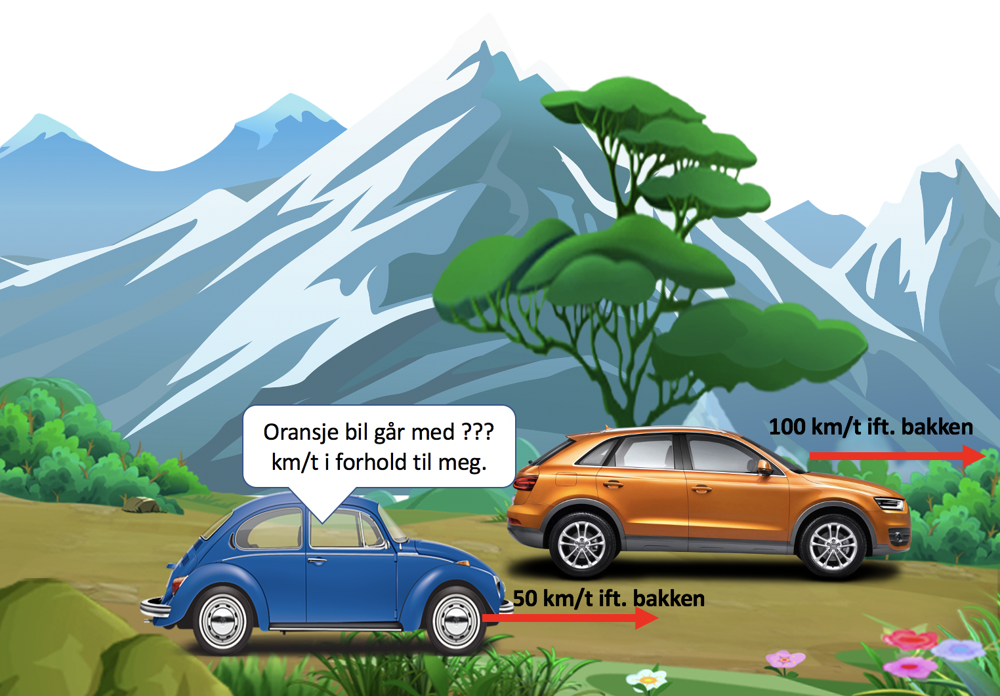

Forrige side🙂 🙁Klassisk relativitetPADLET

Nå har den blå bilen starten motoren slik at den har en fart på 50 km/t i forhold til bakken. Den oransje bilen har enda 100 km/t i forhold til bakken. Hvilken hastighet har den oransje bilen i den blå bilens referansesystem? Et referansesystem er et sett av observatører som alle er i ro i forhold til hverandre og derfor vil være enige om hastighetsmålinger av objekter.
-100 km/t-50 km/t0 km/t50 km/t100 km/t